This report describes the process of camera calibration using linear regression. It then goes on to discuss how to estimate the fundamental matrix, both with and without normalizing the co-ordinates. The last section talks about RANSAC epipolar line estimation algorithm. The report also indicates how normalization, and other parameter tuning affects the epipolar lines in various images.
This is to find the projection matrix which can later be used to map 2D co-ordinates in an image to actual real world co-ordinates in 3D. I have set up linear regression equations on homogeneous co-ordinates. Using the set of correctly mapped 2D to 3D co-ordinates, I have estimated the parameters which make up the projection matrix using least squares regression. This projection matrix is later used to estimate one extrinsic parameter, the camera center (-1 * inverse(inrinsic parameter matrix * rotation matrix)* (inrinsic parameter matrix * translation matrix)).
The following visualizations of projected and the provided actual points are a good way to verify the correctness of the results. In left figure, all the points estimated by the calculated projection matrix match with those given. In right figure, the camera location is plotted along with all the points, and its position seems to be correct intuitively.
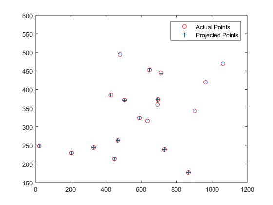 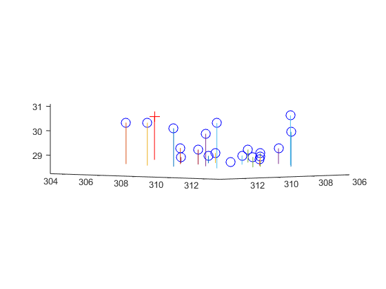Also for the provided "pts2d-pic_b.txt" and "pts3d.txt" points the following are the projection matrix and camera center obtained.
The projection matrix is:
-2.0466 1.1874 0.3889 243.7330
-0.4569 -0.3020 2.1472 165.9325
-0.0022 -0.0011 0.0006 1.0000
The estimated location of camera is:
<303.0967, 307.1842, 30.4223>
Fundamental matrix relates points in stereo images in such a way that if F is the fundamental matrix, and x is a point in one image, Fx represents the epipolar line on which a corresponding point x' lies. The points x' and x basically satisfy the equation x'Fx = 0. Eight-point algorithm estimates the fundamental matrix using eight or more point correspondences (since there are eight parameters to find with homogeneous co-ordinates). However, there is a problem with using the co-ordinates as-is. The solution is accurate only when x has well-defined singular value which may not be the case especially when co-ordinates are only approximately correct (which is what SIFT gives). This can be solved by normalizing the co-ordinates before running the eight-point algorithm. The points are normalized using linear transformation, noise is added to points and the results can be seen below. However, the differences are much more starkly observed in the next section.
The fundamental matrix estimated (co-ordinates are normalized and noise is added):
-0.0000 0.0001 -0.0162
0.0001 0.0000 0.1284
-0.0013 -0.2020 6.5044
Epipolar lines for base image pair
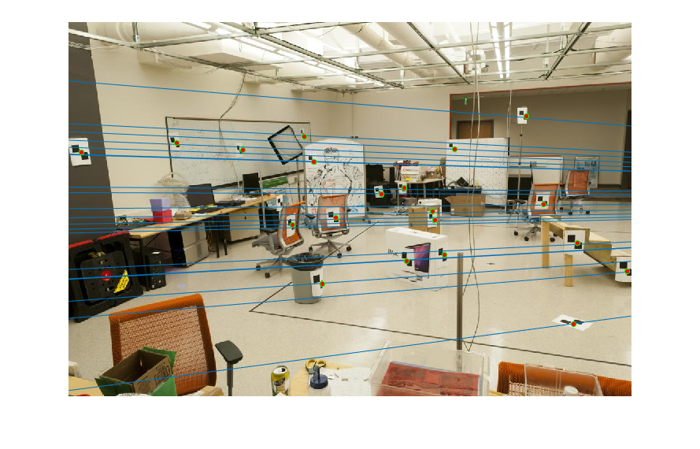 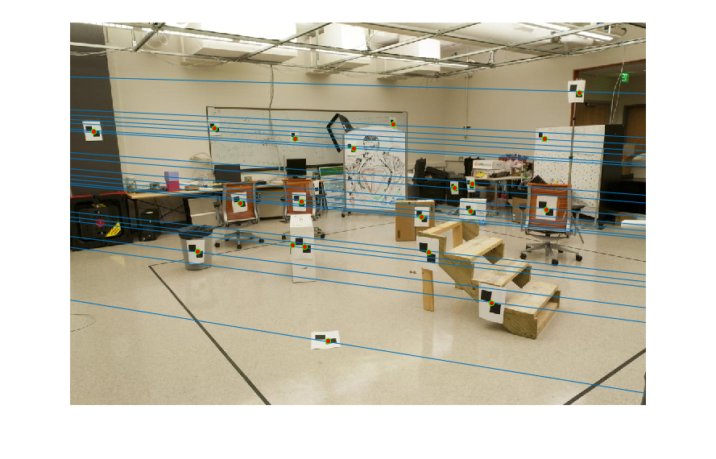RANSAC stands for Random Sample Consensus. This is an iterative method to estimate fundamental matrix by finding the optimal number of inliers which must be used out of all the matches (inliers and ouliers) that SIFT provides between images. The following are the steps in RANSAC:
Step 1: Setting the number of iterations the algorithm must be run for. Setting the threshold for the deviation of absolute value fundamental matrix (x'Fx) must satisfy for any pair of matches x' and x.
Step 2: In each iteration select 8 points randomly (the fundamental matrix needs only 8 point matches for estimating all its parameters provided the matches are all homogeneous co-ordinates). Find the fundamental matrix estimate using the method discussed in the web page earlier.
Step 3: For each of the point matches which are not in the above 8 points, calculate the absolute value of x'Fx to find how much it deviates from 0 (a perfect inlier has its value = 0). If this value is below the threshold set in Step 1, add it to the inlier list.
Step 4: Repeat the above steps for the number of iterations set in Step 1. Each time a different set of 8 points are chosen. Once all the iterations are done, pick the iteration with max number of inliers. The results with and without normalization of the Fundamental matrix calculation are most pronounced in this step as can be seen from the images below.
Epipolar lines for Mount Rushmore image pair with normalization (top two around 612 good inliers) and without normalization (bottom two; around 184 good inliers, tighter threshold)
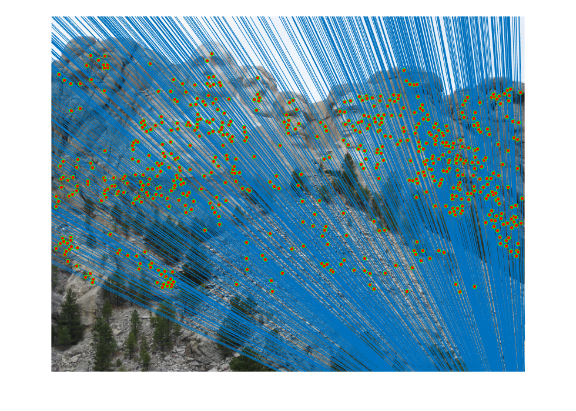 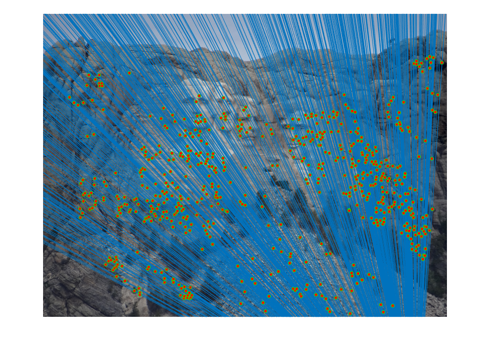 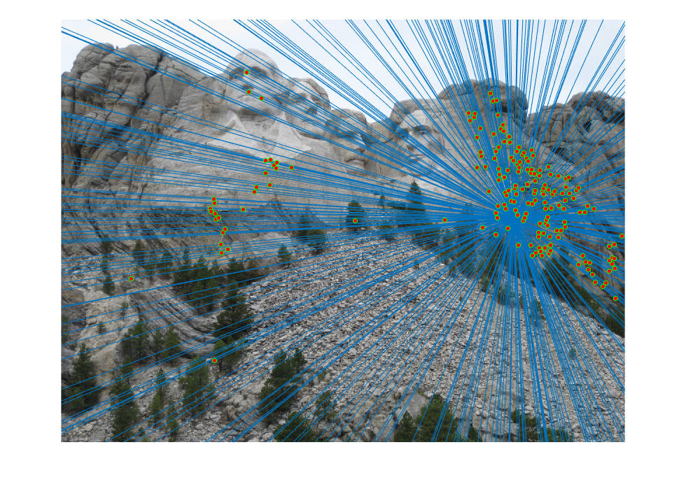 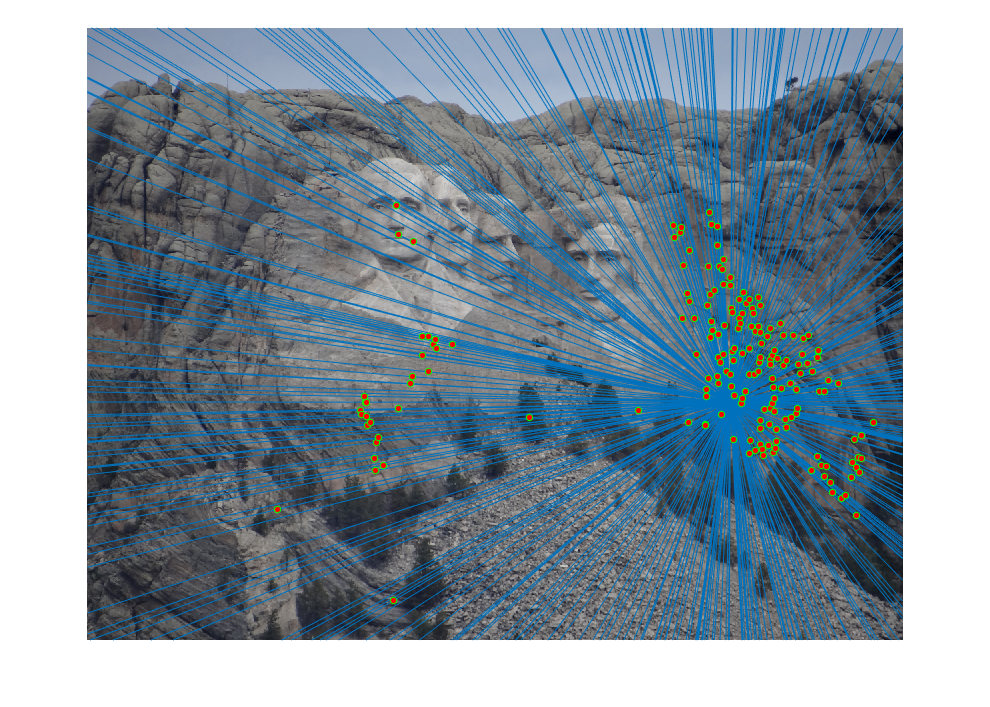Inlier correspondences
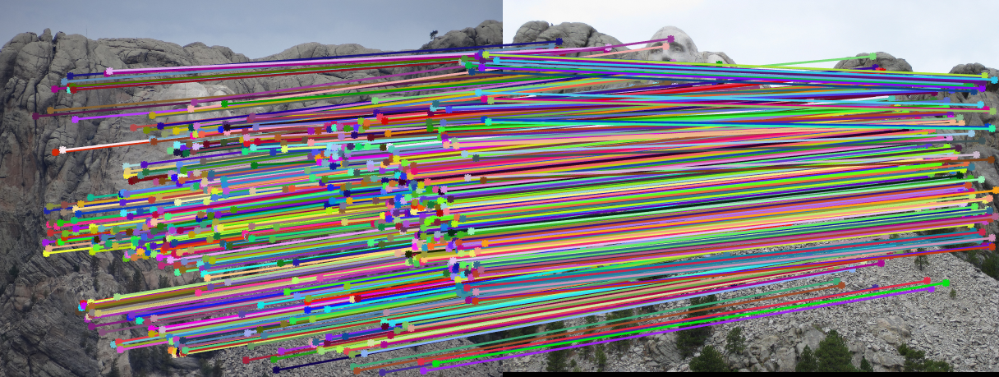Epipolar lines for Notre Dame image pair with normalization (top two; around 535 good inliers) and without normalization (bottom two; around 160 good inliers, tighter threshold)
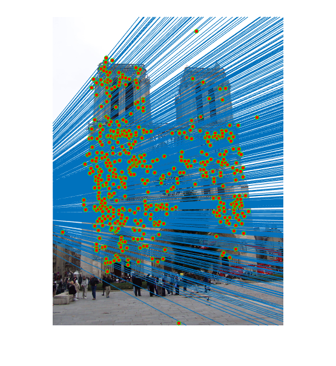 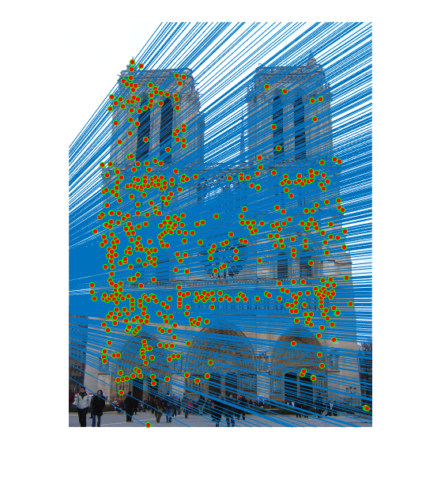 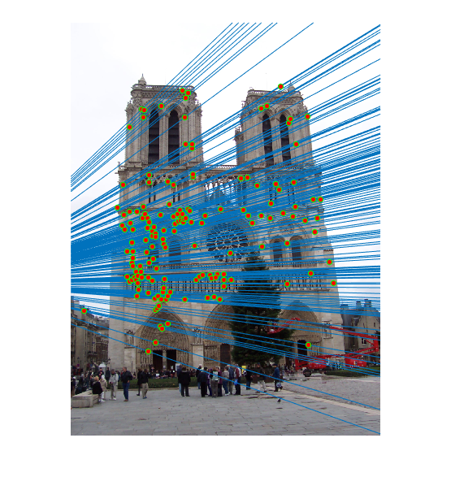 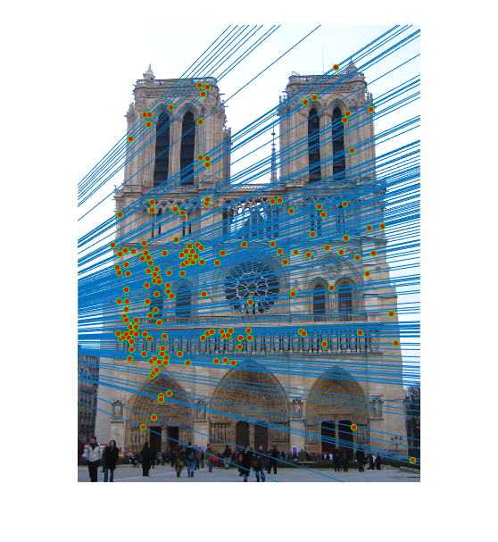Inlier correspondences
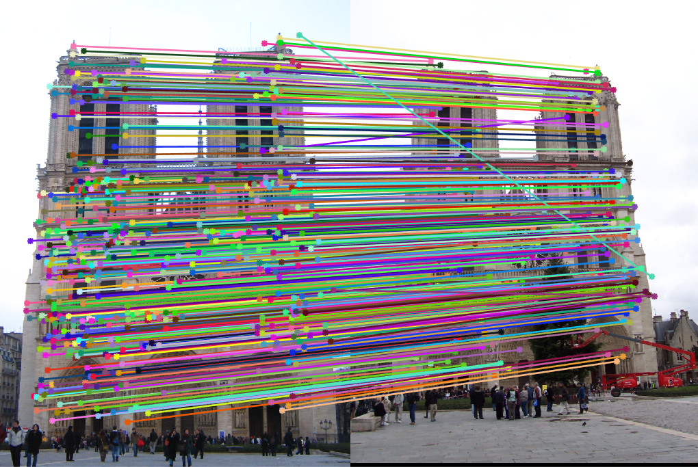Epipolar lines for Gaudi image pair with normalization (top two; around 320 good inliers) and without normalization (bottom two; around 165 good inliers, tighter threshold)
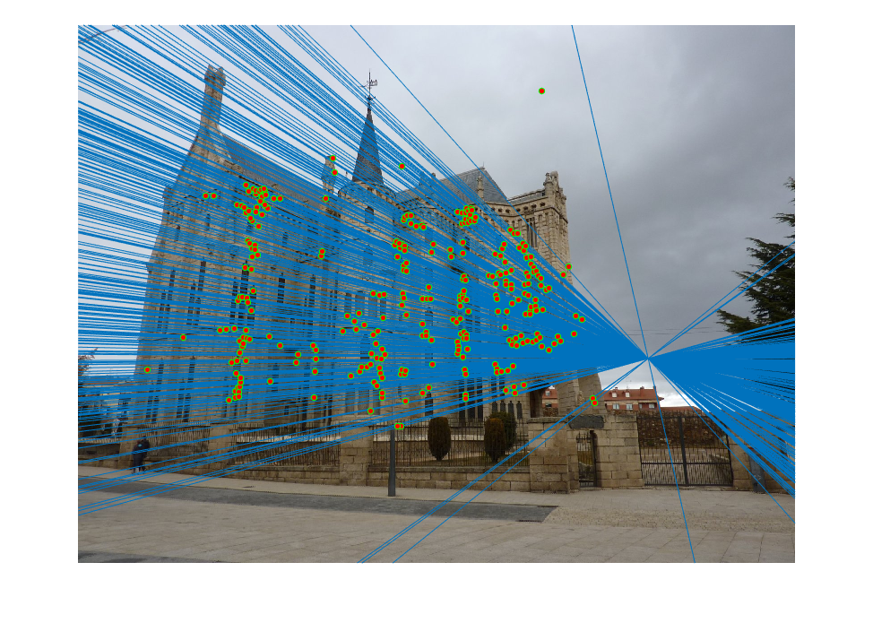 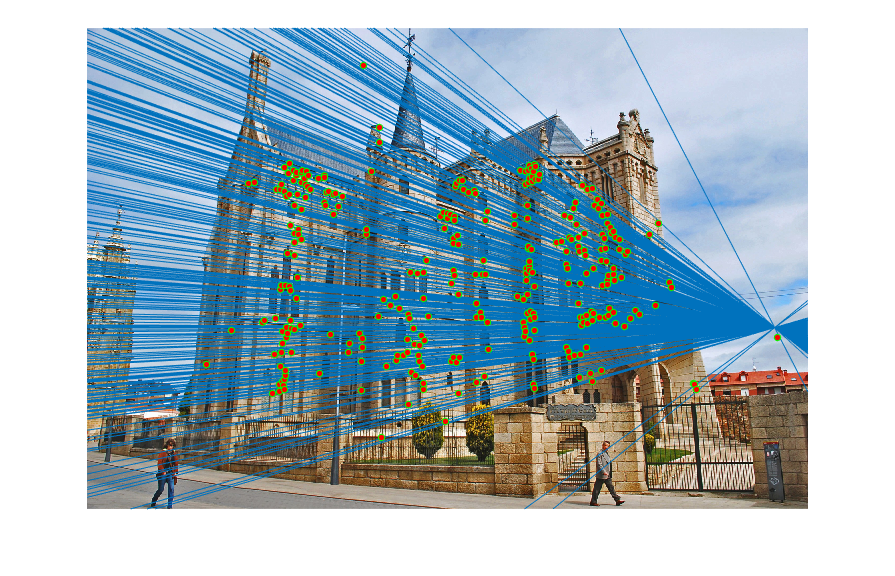 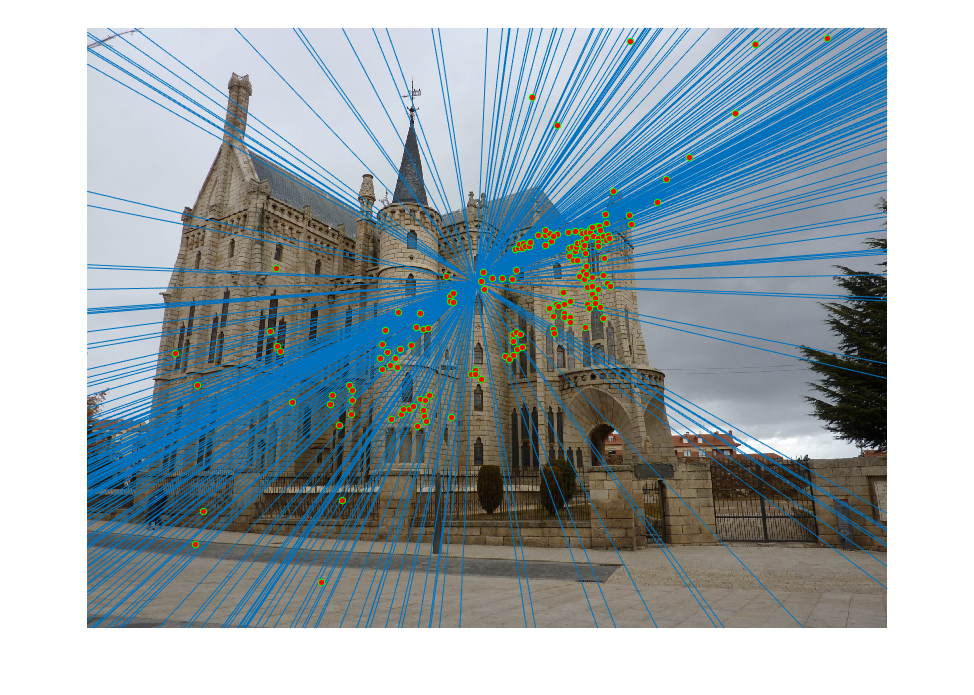 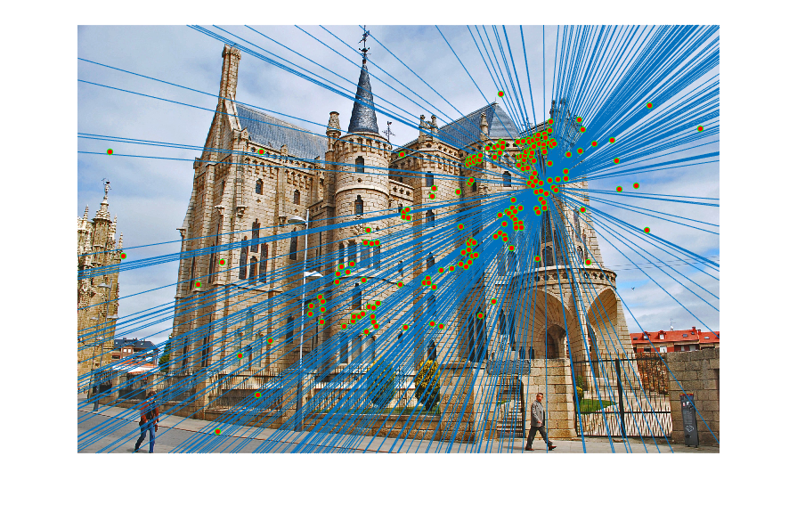Inlier correspondences
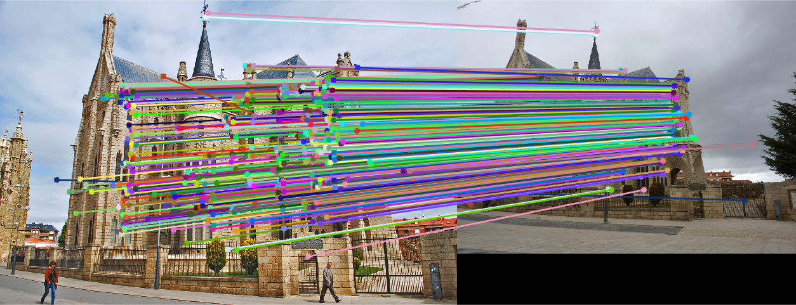1) Increasing the number of iterations gave more number of correct inliers (412 to 612 for Mount Rushmore) with other parameters like threshold remaining unchanged. But it takes a little longer to run (~20 seconds for 1000 iterations and ~2 min for 11000 iterations)
2) Normalizing the SIFT matches resulted in increased number of inliers for all the images.
3) Too low a threshold (for example, 0.002) filtered out even good inliers, and a high threshold (for example, 0.1) allowed too many bad inliers. A value like 0.05 has been found to be optimal.